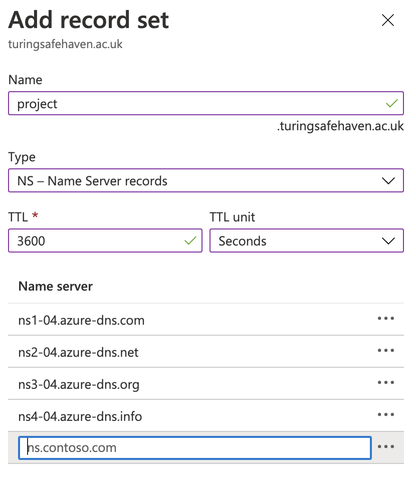
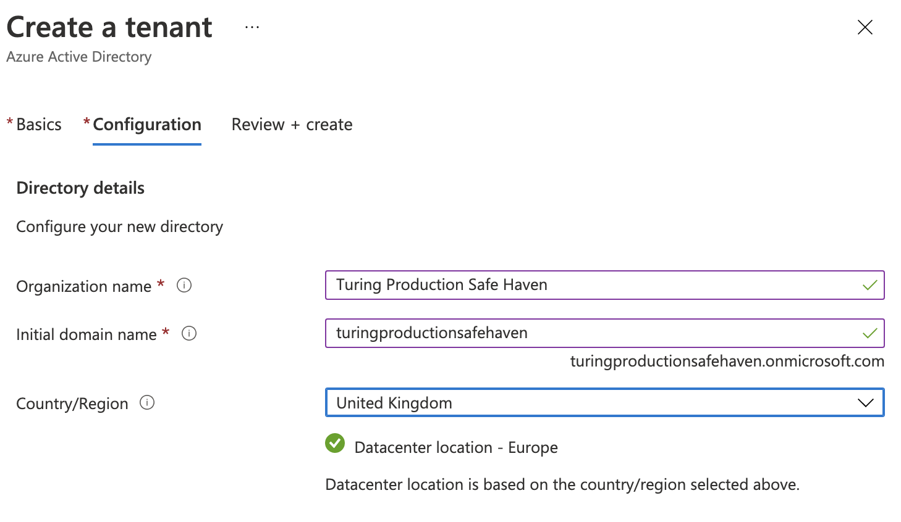
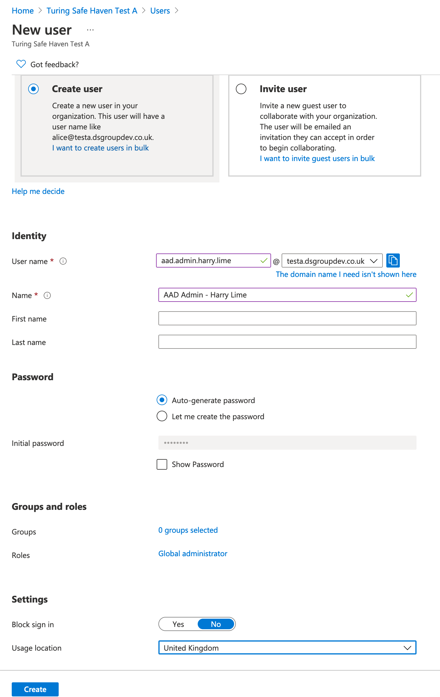
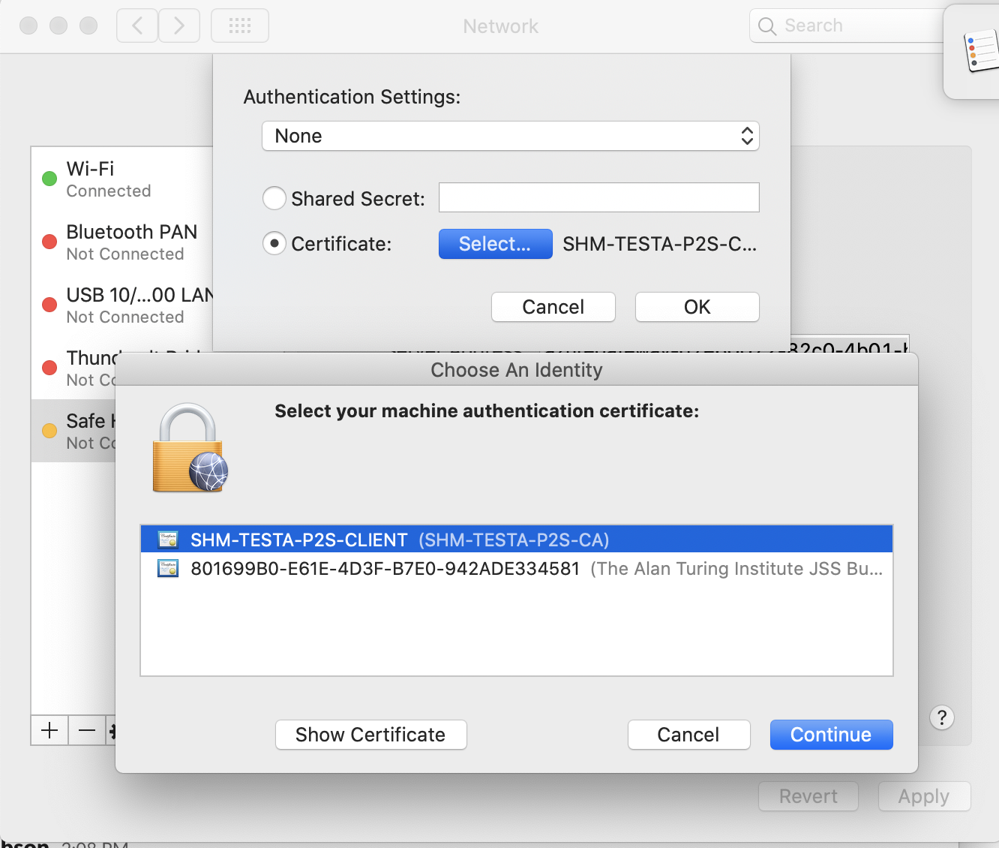

Deploy a Safe Haven Management Environment (SHM)¶
These instructions will deploy a new Safe Haven Management Environment (SHM). This is required to manage your Secure Research Environments (SREs) and must be deployed before you create any SREs. A single SHM can manage all your SREs. Alternatively, you may run multiple SHMs concurrently, for example you may have a group of projects with the same lifecycle which share a different SHM to your other projects.
Explanation of symbols used in this guide¶
Powershell command

This indicates a
Powershellcommand which you will need to run locally on your machineEnsure you have checked out (or downloaded) the appropriate tag of the Safe Haven repository from https://github.com/alan-turing-institute/data-safe-haven.
Open a
Powershellterminal and navigate to the indicated directory of your locally checked-out version of the Safe Haven repositoryEnsure that you are logged into Azure by running the
Connect-AzAccountcommandTip
If your account is a guest in additional Azure tenants, you may need to add the
-Tenant <Tenant ID>flag, where<Tenant ID>is the ID of the Azure tenant you want to deploy into.This command will give you a URL and a short alphanumeric code.
Go to URL in a web browser, enter the code and log in to your account on Azure.
Tip
If you have several Azure accounts, make sure you use one that has permissions to make changes to the subscription you are using
Remote command

This indicates a command which you will need to run remotely on an Azure virtual machine (VM) using
Microsoft Remote DesktopOpen
Microsoft Remote Desktopand clickAdd Desktop/Add PCEnter the private IP address of the VM that you need to connect to in the
PC namefield (this can be found by looking in the Azure portal)Enter the name of the VM (for example
DC1-SHM-PROJECT) in theFriendly namefieldClick
AddEnsure you are connected to the SHM VPN that you have set up
Double click on the desktop that appears under
Saved DesktopsorPCs.Use the
usernameandpasswordspecified by the appropriate section of the guide
Tip
If you see a warning dialog that the certificate cannot be verified as root, accept this and continue.
Azure Portal operation

This indicates an operation which needs to be carried out in the
Azure Portalusing a web browser on your local machine.You will need to login to the portal using an account with privileges to make the necessary changes to the resources you are altering
Azure Active Directory operation

This indicates an operation which needs to be carried out in the
Azure Portalusing a web browser on your local machine.You will need to login to the portal using an account with administrative privileges on the
Azure Active Directorythat you are altering.Note that this might be different from the account which is able to create/alter resources in the Azure subscription where you are building the Safe Haven.
OS-dependent steps
The following icons indicate steps that depend on the OS you are using to deploy the SHM
MacOS
Windows
Linux
1. üå± Prerequisites¬∂
An Azure subscription with sufficient credits to build the environment in: we recommend around $3,000 as a reasonable starting point.
Tip
Ensure that the Owner of the subscription is an
Azure Security groupthat contains all administrators and no-one else.We recommend using separate
Azure Active Directoriesfor users and administrators
PowerShellInstall PowerShell v7.0 or above
Powershellcross-platform modulesTip
Check whether you are missing any required modules by running
PS> ./deployment/CheckRequirements.ps1
Microsoft Remote Desktop
OpenSSLbrew install opensslError
If
Powershellcannot detectOpenSSLyou may need to explicitly add yourOpenSSLinstallation to yourPowershellpath by running$env:path = $env:path + ";<path to OpenSSL bin directory>
Hint
If you run:
PS> Start-Transcript -Path <a log file>
before you start your deployment and
PS> Stop-Transcript
afterwards, you will automatically get a full log of the Powershell commands you have run.
2. üìã Safe Haven Management configuration¬∂
Management environment ID¶
Important
Choose a short ID <SHM ID> to identify the management environment (e.g. project).
This can have a maximum of seven alphanumeric characters.
Create configuration file¶
The core properties for the Safe Haven Management (SHM) environment must be defined in a JSON file named shm_<SHM ID>_core_config.json in the environment_configs folder.
The following core SHM properties are required - look in the environment_configs folder to see some examples.
{
"name": "Name of this Safe Haven (e.g. 'Turing Production Safe Haven').",
"shmId": "The <SHM ID> that you decided on above (e.g. 'project').",
"domain": "The fully qualified domain name for the management environment (e.g. 'project.turingsafehaven.ac.uk')",
"timezone": "[Optional] Timezone in IANA format (e.g. 'Europe/London').",
"azure": {
"subscriptionName": "Azure subscription to deploy the management environment into.",
"adminGroupName": "Azure Security Group that admins of this Safe Haven will belong to.",
"location": "Azure location to deploy the management environment into (e.g. 'uksouth')."
},
"organisation": {
"name": "Name of your organisation, used when generating SSL certificates (e.g. 'The Alan Turing Institute')",
"townCity": "Town where your organisation is located, used when generating SSL certificates (e.g. 'London')",
"stateCountyRegion": "Region where your organisation is located, used when generating SSL certificates (e.g. 'London')",
"countryCode": "Country where your organisation is located, used when generating SSL certificates (e.g. 'GB')",
"contactEmail": "Email address at your organisation that will receive notifications when SSL certificates are about to expire."
},
"dnsRecords": {
"subscriptionName": "[Optional] Azure subscription which holds DNS records (if not specified then the value from the 'azure' block will be used).",
"resourceGroupName": "[Optional] Resource group which holds DNS records (e.g. RG_SHM_DNS_TEST)."
},
"vmImages": {
"subscriptionName": "[Optional] Azure subscription where VM images will be built (if not specified then the value from the 'azure' block will be used). Multiple Safe Haven deployments can share a single set of VM images in a common subscription if desired - this is what is done in the Turing deployment. If you are hoping to use images that have already been built for another Safe Haven deployment, make sure you specify this parameter accordingly.",
"location": "[Optional] Azure location where VM images should be built (if not specified then the value from the 'azure' block will be used). Multiple Safe Haven deployments can share a single set of VM images in a common subscription if desired - this is what is done in the Turing deployment. If you are hoping to use images that have already been built for another Safe Haven deployment, make sure you specify this parameter accordingly.",
"buildIpAddresses": "[Optional] One or more IP addresses which admins will be running the VM build scripts from (if not specified then Turing IP addresses will be used)."
},
"overrides": "[Optional, Advanced] Do not use this unless you know what you're doing! If you want to override any of the default settings, you can do so by creating the same JSON structure that would be found in the final config file and nesting it under this entry. For example, to change the size of the data disk on the domain controller, you could use something like: 'shm: { dc: { disks: { data: { sizeGb: 50 } } } }'"
}
Note
This configuration file is also used when deploying an SRE environment.
We recommend that you set the fully qualified domain name to
<SHM ID>.<some domain that you control>.This may require purchasing a dedicated domain so follow your organisation’s guidance.
Alan Turing Institute default
production uses
<SHM ID>.turingsafehaven.ac.ukdevelopment uses
<SHM ID>.dsgroupdev.co.uk
(Optional) Verify code version¶
If you have cloned/forked the code from our GitHub repository, you can confirm which version of the Data Safe Haven you are currently using by running the following commands:
PS> git tag --list | Select-String $(git describe --tags)
This will check the tag you are using against the list of known tags and print it out. You can include this confirmation in any record you keep of your deployment.
(Optional) View full SHM configuration¶
A full configuration, which will be used in subsequent steps, will be automatically generated from your core configuration. Should you wish to, you can print the full SHM config by running the following Powershell command:

./deployment
PS> ./ShowConfigFile.ps1 -shmId <SHM ID>
where
<SHM ID>is the management environment ID for this SHM
3. üö™ Configure DNS for the custom domain¬∂

./deployment/safe_haven_management_environment/setup
PS> ./Setup_SHM_DNS_Zone.ps1 -shmId <SHM ID>
where
<SHM ID>is the management environment ID for this SHM
Error
If you see a message You need to add the following NS records to the parent DNS system for... you will need to add the NS records manually to the parent’s DNS system, as follows:
Manual DNS configuration instructions
To find the required values for the NS records on the portal, click
All resourcesin the far left panel, search forDNS Zoneand locate the DNS Zone with the SHM’s domain.The NS record will list four Azure name servers which must be duplicated to the parent DNS system.
If the parent domain has an Azure DNS Zone, create an NS record set in this zone.
The name should be set to the subdomain (e.g.
project) or@if using a custom domain, and the values duplicated from aboveFor example, for a new subdomain
project.turingsafehaven.ac.uk, duplicate the NS records from the Azure DNS Zoneproject.turingsafehaven.ac.ukto the Azure DNS Zone forturingsafehaven.ac.uk, by creating a record set with nameproject
If the parent domain is outside of Azure, create NS records in the registrar for the new domain with the same value as the NS records in the new Azure DNS Zone for the domain.
4. üìÅ Setup Azure Active Directory (AAD)¬∂
Create a new Azure Active Directory¶

From the Azure portal, click
Create a Resourceand search forAzure Active Directory(AAD)Screenshots

Click
CreateSet the
Organisation Nameto the value of<name>in your core configuration file (e.g.Turing Production Safe Haven)Note: be careful not to confuse this with the
<name>under<organisation>used in the config file
Set the
Initial Domain Nameto theOrganisation Nameall lower case with spaces removed (e.g.turingproductionsafehaven)Set the
Country or Regionto whatever region is appropriate for your deployment (e.g.United Kingdom)Screenshots
Click
CreateWait for the Azure Active Directory to be created
Get the Azure Active Directory Tenant ID¶

From the Azure portal, navigate to the AAD you have created. You can do this by:
Clicking the link displayed at the end of the initial AAD deployment.
Clicking on your username and profile icon at the top left of the Azure portal, clicking
Switch directoryand selecting the AAD you have just created from theAll Directoriessection of theDirectory + Subscriptionpanel that then displays.
If required, click the “hamburger” menu in the top left corner (three horizontal lines) and select
Azure Active DirectoryClick
Overviewin the left panel and copy theTenant IDdisplayed under the AAD name and initialsomething.onmicrosoft.comdomain.Screenshots

Add the SHM domain to the Azure Active Directory¶
./deployment/safe_haven_management_environment/setup
PS> ./Setup_SHM_AAD_Domain.ps1 -shmId <SHM ID> -tenantId <AAD tenant ID>
where
<SHM ID>is the management environment ID for this SHMwhere
<AAD tenant ID>is the tenant ID for this AAD
Error
If you get an error like Could not load file or assembly 'Microsoft.IdentityModel.Clients.ActiveDirectory, Version=3.19.8.16603, Culture=neutral PublicKeyToken=31bf3856ad364e35'. Could not find or load a specific file. (0x80131621) then you may need to try again in a fresh Powershell terminal.
Error
Due to delays with DNS propagation, the script may occasionally exhaust the maximum number of retries without managing to verify the domain. If this occurs, run the script again. If it exhausts the number of retries a second time, wait an hour and try again.
5. üîë Deploy Key Vault for SHM secrets and create emergency admin account¬∂

./deployment/safe_haven_management_environment/setup
PS> ./Setup_SHM_Key_Vault_And_Emergency_Admin.ps1 -shmId <SHM ID> -tenantId <AAD tenant ID>
where
<SHM ID>is the management environment ID for this SHMwhere
<AAD tenant ID>is the tenant ID for this AAD
Error
If you get an error like Could not load file or assembly 'Microsoft.IdentityModel.Clients.ActiveDirectory, Version=3.19.8.16603, Culture=neutral PublicKeyToken=31bf3856ad364e35'. Could not find or load a specific file. (0x80131621) then you may need to try again in a fresh Powershell terminal.
Some (rare) operations that require you to be logged in as a native Global Administrator. To support these rare cases, and to allow access to the Safe Haven Azure AD in the case of loss of access to personal administrator accounts (e.g. lost access to MFA), an emergency access administrator account has been created by the above script.
Warning
Do not use this account unless absolutely required!
6. üì± Enable MFA and self-service password reset¬∂
To enable MFA and self-service password reset, you must have sufficient licences for all users.
Add licences that support MFA¶

Click the heading that applies to you to expand the instructions for that scenario.
Test deployments
For testing you can enable a free trial of the P2 License (NB. it can take a while for these to appear on your AAD). You can activate the trial while logged in as your deafult guest administrator account.
From the Azure portal, navigate to the AAD you have created.
Click on
Licencesin the left hand sidebarClick on
All productsin the left hand sidebarClick on the
+Try/Buytext above the empty product list and add a suitable licence product.Expand the
Free trialarrow underAzure AD Premium P2Click the
ActivatebuttonWait for the
Azure Active Directory Premium P2licence to appear on the list ofAll Products(this could take several minutes)
Production deployments
For production you should buy P1 licences. This requires you to be logged in with an native Global Administrator account. As activating self-service password reset requires active MFA licences, this is one of the rare occasions you will need to use the emergency access admin account.
Switch to the the emergency administrator account:
Click on your username at the top right corner of the screen, then click “Sign in with a different account”
Enter
aad.admin.emergency.access@<SHM domain>as the usernameOpen a new browser tab and go to the Azure Portal
Change to the Azure Active Directory associated with the Safe Haven SHM subscription (e.g. an existing corporate Azure AD). Do this by clicking on your username at the top right corner of the screen, then
Switch directory, then selecting the directory you wish to switch to.Click the “hamburger” menu in the top left corner (three horizontal lines) and select
SubscriptionsClick on the Safe Haven SHM subscription
Click on
Resource Groupsin the left hand sidebar thenRG_SHM_<SHM ID>_SECRETSClick on the
kv-shm-<shm id>Key VaultClick on
Secretsin the left hand sidebarClick on the
shm-<shm id>-aad-emergency-admin-passwordsecretClick on the entry in the
Current versionsectionClick on the clipboard icon next to the
Secret valuefieldThe emergency admin account password in now in your clipboard
Switch back to the browser tab with the Azure login page
Paste the password you copied from the Key Vault
Click the
Sign inbutton
Click the
Purchase serviceslink in the information panel above the trial options.In the “Microsoft 365 Admin Centre” portal that opens:
Expand the
Billingsection of the left hand side barClick on
Purchase servicesScroll down the list of products and select
Azure Active Directory Premium P1and clickBuySelect
Pay monthlyEnter the number of licences required.
Leave
automatically assign all of your users with no licencescheckedClick
Check out nowEnter the address of the organisation running the Safe Haven on the next screen
Click next and enter payment details when requested
Switch back to your original administrator account
Click on your username at the top right corner of the screen, then click “Sign in with a different account”
Log in as the user you used to create the Safe Haven Azure AD
Enable self-service password reset¶
Ensure your Azure Portal session is using the new Safe Haven Management (SHM) AAD directory. The name of the current directory is under your username in the top right corner of the Azure portal screen. To change directories click on your username at the top right corner of the screen, then
Switch directory, then the name of the new SHM directory.Click the “hamburger” menu in the top left corner (three horizontal lines) and select
Azure Active DirectoryClick
Password resetin the left hand sidebarSet the
Self service password reset enabledtoggle toAll
Click the
Saveicon
Error
If you see a message about buying licences, you may need to refresh the page for the password reset option to show.
Configure MFA on Azure Active Directory¶
From the Azure portal, navigate to the AAD you have created.
Click
Usersin the left hand sidebarClick the
Per-user MFAicon in the top bar of the users list.Click on
Service settingsat the top of the panelConfigure MFA as follows:
In the
App passwordssection selectDo not allow users to create app passwords to sign in to non-browser appsEnsure the
Verification optionsare set as follows:check
Call to phoneandNotification through mobile app(Call to phoneis not available with a trial P2 licence)uncheck
Text message to phoneandVerification code from mobile app or hardware token
In
Remember multi-factor authenticationsectionensure
Allow users to remember multi-factor authentication on devices they trustis unchecked
Click “Save” and close window
Screenshots

7. üÜî Configure internal administrator accounts¬∂
Caution
The emergency access admin account should not be used except when absolute necessary. In particular, it should not be used as a shared admin account for routine administration of the Safe Haven.
A default external administrator account was automatically created for the user you were logged in as when you initially created the Azure AD. This user should also not be used for administering the Azure AD, as it is not controlled by this AD. You will delete this user after creating a new native administrator account for yourself and the other administrators of the Safe Haven.
Tip
In order to avoid being a single point of failure, we strongly recommend that you add other administrators in addition to yourself.
Add internal administrator accounts for yourself and others¶
Several later steps will require the use of a native administrator account with a valid mobile phone and email address. You must therefore create and activate a native administrator account for each person who will be acting as a system administrator.
Tip
We strongly recommend that you delete the default external administrator account after creating the native account.
Create a new account for each administrator (including yourself)¶
From the Azure portal, navigate to the AAD you have created.
Click
Usersin the left hand sidebar and click on the+New usericon in the top menu above the list of users.Create an internal admin user:
User name:
aad.admin.firstname.lastname@<SHM domain>Name:
AAD Admin - Firstname LastnameLeave
Auto-generate passwordset. Users will be able to reset their passwords on first login and it is good security practice for admins not to know user passwords.Click the
Userlink in theRolesfield and make the user an administrator:Search for
Global AdministratorCheck
Global AdministratorClick the
Selectbutton
Set their usage location to the country you used when creating the Safe Haven Azure AD
Leave all other fields empty, including First name and Last name
Click
Create
Add a mobile phone number for self-service password reset:
Navigate to
Usersand click on the account you have just created.Edit the
Contact infosection and:Add the the user’s mobile phone number to the
Mobile phonefield. Make sure to prefix it with the country code and do not include the leading zero (+<country-code> <phone-number-without-leading-zero>e.g.+44 7700900000).They will need to enter their number in exactly this format when performing a self-service password reset.
Click the
Saveicon at the top of the user details panel
Add an authentication email
Click
Authentication methodsin the left hand sidebarEnter the user’s mobile phone number in the
Phonefield, using the same format as aboveEnter the user’s institutional email address in the
EmailfieldNote that you do not need to fill out either of the
Phonefields hereClick the
Saveicon at the top of the panelScreenshots

Activate and configure your new internal admin account¶
Warning
In the next step we will delete the external admin account created for the user account you used to create the Azure AD. Before you do this, you must configure and log into the native admin account you have just created for yourself.
The other administrators you have just set up can activate their accounts by following the same steps.
Go to https://aka.ms/mfasetup in an incognito / private browsing tab
Enter your username (
aad.admin.firstname.lastname@<SHM domain>)Click the
Forgotten my passwordlinkEnter the captcha text and press next
Enter your mobile phone number, making sure to prefix it with the country code and to not include the leading zero (
+<country-code> <phone-number-without-leading-zero>e.g.+44 7700900000).Enter the code that was texted to your phone
Enter a new password
Click the
Sign in with new passwordlink on the following page, or go to https://aka.ms/mfasetup againEnter your username (
aad.admin.firstname.lastname@<SHM domain>)and the new passwordClick
Nextat theHelp us to protect your accountpromptFollow the instructions to configure
Microsoft Authenticator
Remove the default external user that was used to create the Azure AD¶
Warning
Make sure you have activated your account and successfully logged in with the new native administrator account you have just created for yourself (aad.admin.firstname.lastname@<SHM domain>) before deleting the default external administrator account.
Ensure you are logged in with the new native administrator account you have just created.
Click on your username at the top right corner of the screen, then
Sign in with a different user.Log in with the password you set for yourself when activating your admin account in the previous step
From the Azure portal, navigate to the AAD you have created.
Click
Usersin the left hand sidebarSelect the default external user that was created when you created the Azure AD.
The
User principal namefield for this user will contain the external domain and will have#EXT#before the@sign (for examplealovelace_turing.ac.uk#EXT#@turingsafehaven.onmicrosoft.com)
Click the
Delete usericon in the menu bar at the top of the user list panel
Adding MFA licences to any non-admin users¶
Administrator accounts can use MFA and reset their passwords without a licence needing to be assigned. However, if any non-admin users are set up and are unable to reset their own password or set up MFA on their account, you can add a licence to enable them to do so:
How to add MFA licenses
Ensure you are logged in to the Azure Portal in with the native administrator account you created.
Ensure your session is using the new Safe Haven Management (SHM) AAD directory. The name of the current directory is under your username in the top right corner of the Azure portal screen. To change directories click on your username at the top right corner of the screen, then
Switch directory, then the name of the new SHM directory.Click the “hamburger” menu in the top left corner (three horizontal lines) and select
Azure Active DirectoryClick
Licencesin the left hand sidebarClick
All productsin the left hand sidebarClick the relevant licence product
Click the
+Assignicon in the top bar above the list of user licence assignmentsClick
UsersClick on the user or group you want to assign a licence to
Click
SelectClick
Assign
8. üöâ Deploy network and VPN gateway¬∂

./deployment/safe_haven_management_environment/setup
PS> ./Setup_SHM_Networking.ps1 -shmId <SHM ID>
where
<SHM ID>is the management environment ID for this SHM
Sanity check
Once the script exits successfully you should see the following resource groups in the Azure Portal under the SHM subscription, with the appropriate <SHM ID> for your deployment e.g. RG_SHM_<SHM ID>_NETWORKING:
Error
If you cannot see these resource groups:
Ensure you are logged into the portal using the account that you are building the environment with.
Click on your username in the top right corner of the Azure portal screen and ensure that your SHM subscription (see
shm_<SHM ID>_core_config.json) is one of the selections.Click the “hamburger” menu in the top left corner (three horizontal lines) and select
Resource groups.
Download a client VPN certificate for the Safe Haven Management network¶
Navigate to the SHM Key Vault via
Resource Groups > RG_SHM_<SHM ID>_SECRETS > kv-shm-<SHM ID>Once there open the
Certificatespage under theSettingssection in the left hand sidebar.Click on the certificate named
shm-<SHM ID>-vpn-client-certand select theCURRENT VERSIONClick the
Download in PFX/PEM formatlink at the top of the page and save the*.pfxcertificate file locallyTo install, double click on the downloaded certificate (or on macOS you can manually drag it into the
loginkeychain), leaving the password field blank.
Make sure to securely delete the local “*.pfx” certificate file that you downloaded after you have installed it.
Configure a VPN connection to the Safe Haven Management network¶
Navigate to the Safe Haven Management (SHM) virtual network gateway in the SHM subscription via
Resource Groups > RG_SHM_<SHM ID>_NETWORKING > VNET_SHM_<SHM ID>_GWOnce there open the
Point-to-site configurationpage under theSettingssection in the left hand sidebarClick the
Download VPN clientlink at the top of the page to download a zip fileScreenshots

Unzip the zip file and identify the root certificate (
Generic\VpnServerRoot.cer) and VPN configuration file (Generic\VpnSettings.xml)Follow the VPN set up instructions using the section appropriate to your operating system (you do not need to install the
Generic\VpnServerRoot.cercertificate, as we’re using our own self-signed root certificate):
instructions
Use SSTP for the VPN type
Name the VPN connection
Safe Haven Management Gateway (<SHM ID>)Do not rename the VPN client as this will break it
instructions
Start from step 3 of the
macOSinstructions.Use IKEv2 for the VPN type
For users of macOS Catalina or later
You must select
Nonefrom the drop-down (notCertificate) and then select theCertificateradio button underneath as shown in the image below.Name the VPN connection
Safe Haven Management Gateway (<SHM ID>)You can view the details of the downloaded certificate by highlighting the certificate file in Finder and pressing the spacebar.
You can then look for the certificate of the same name in the login KeyChain and view its details by double clicking the list entry.
If the details match the certificate has been successfully installed.
You should now be able to connect to the SHM virtual network via the VPN.
Important
Each time you need to access the virtual network ensure you are connected via the VPN.
Error
You may get a
Windows protected your PC pop up.
If so, click More info -> Run anyway.
Error
You may encounter a further warning along the lines of
Windows cannot access the specified device, path, or file.
This may mean that your antivirus is blocking the VPN client.
You will need configure your antivirus software to make an exception.
9. üè° Deploy and configure domain controllers¬∂

./deployment/safe_haven_management_environment/setup
PS> ./Setup_SHM_DC.ps1 -shmId <SHM ID>
where
<SHM ID>is the management environment ID for this SHM
Sanity check
Once the script exits successfully you should see the following resource groups in the Azure Portal under the SHM subscription, with the appropriate <SHM ID> for your deployment e.g. RG_SHM_<SHM ID>_NETWORKING:

Error
If you cannot see these resource groups:
Ensure you are logged into the portal using the account that you are building the environment with.
Click on your username in the top right corner of the Azure portal screen and ensure that your SHM subscription (see
shm_<SHM ID>_core_config.json) is one of the selections.Click the “hamburger” menu in the top left corner (three horizontal lines) and select
Resource groups.
Configure the first domain controller via Remote Desktop¶
Navigate to the SHM primary domain controller VM in the portal at
Resource Groups > RG_SHM_<SHM ID>_DC > DC1-SHM-<SHM ID>and note thePrivate IP addressfor this VMNext, navigate to the
RG_SHM_<SHM ID>_SECRETSresource group and then thekv-shm-<SHM ID>Key Vault and then selectsecretson the left hand panel and retrieve the following:<admin username>is in theshm-<SHM ID>-domain-admin-usernamesecret.<admin login>is the<admin username>followed by the SHM AD domain:<admin username>@<SHM domain>.<admin password>is in theshm-<SHM ID>-domain-admin-passwordsecret.
Danger
These domain administrator credentials have complete control over creating and deleting users as well as assigning them to groups.
Do not use them except where specified and never write them down!
Be particularly careful never to use them to log in to any user-accessible VMs (such as the secure research desktops).
Install Azure Active Directory Connect¶

Log into the SHM primary domain controller (
DC1-SHM-<SHM ID>) VM using theprivate IP address,<admin login>and<admin password>that you obtained from the portal above.Navigate to
C:\InstallationRun the
AzureADConnectWindows Installer PackageOn the
Welcome to Azure AD Connectscreen:Tick the
I agree to the license termsboxClick
Continue
On the
Express Settingsscreen:Click
Customize
On the
Install required componentsscreen:Click
Install
On the
User sign-inscreen:Ensure that
Password Hash Synchronizationis selectedClick
Next
On the
Connect to Azure ADscreen:Provide credentials for the Azure Active Directory global administrator account you set up earlier (
aad.admin.<first name>.<last name>@<SHM domain>) when promptedIf you receive a pop-up prompt, provide the same credentials when prompted
Back on the
Connect to Azure ADscreen, clickNextApprove the login with MFA if required
On the
Connect your directoriesscreen:Ensure that correct forest (your custom domain name; e.g
turingsafehaven.ac.uk) is selected and clickAdd DirectoryOn the
AD forest accountpop-up:Select
Use existing AD accountEnter the details for the
localadsyncuser.Username: use the value of the
shm-<SHM ID>-aad-localsync-usernamesecret in the SHM key vault:EITHER prepended with
<Domain ID>\, where theDomain IDis the capitalised form of the<SHM ID>, so if the SHM ID isprojectand the username isprojectlocaladsyncthen you would usePROJECT\projectlocaladsynchere.OR suffixed with
<SHM domain>, so if the SHM domain isproject.turingsafehaven.ac.ukand the username isprojectlocaladsyncthen you would useprojectlocaladsync@project.turingsafehaven.ac.ukhere.
Password: use the
shm-<SHM ID>-aad-localsync-passwordsecret in the SHM key vault.
Click
OK
Click
Next
On the
Azure AD sign-in configurationscreen:Verify that the
User Principal Nameis set touserPrincipalNameClick
Next
On the
Domain and OU filteringscreen:Select
Sync Selected domains and OUsExpand the domain and deselect all objects
Select
Safe Haven Research UsersandSafe Haven Security GroupsClick
Next
On the
Uniquely identifying your usersscreen:Click
Next
On the
Filter users and devicesscreen:Select
Synchronize all users and devicesClick
Next
On the
Optional featuresscreen:Select
Password WritebackClick
Next
On the
Ready to configurescreen:Ensure that the
Start the synchronisation process when configuration completesoption is ticked.Click
InstallThis may take a few minutes to complete
On the
Configuration completescreen:Click
Exit
Note
Take care to consider any differences in the keyboard of your machine and the Windows remote desktop when entering any usernames or passwords.
Error
If you receive an Internet Explorer pop-up dialog Content within this application coming from the website below is being blocked by Internet Explorer Advanced Security Configuration for Microsoft domains such as https://login.microsoft.com or https://aadcdn.msftauth.net then you can safely add these as exceptions:
Click
AddClick
Close
Error
If you receive an error message on the login webpage pop-ups saying We can't sign you in. Javascript is required to sign you in.... followed by the Script Error: Do you want to continue running scripts on this page you can safely allow Javascript:
Click
YesClose the dialog by clicking
X
Error
If you see a Windows Security Warning, related to the MFA login:
Check
Don't show this message againClick
Yesto close the dialog.
Error
If you get an error that the username/password is incorrect or that the domain/directory could not be found when entering the details for the localadsync user, try resetting the password for this user in the Domain Controller Active Directory so that it matches the value stored in the Key Vault
In Server Manager click
Tools > Active Directory Users and ComputersExpand the domain in the left hand panel
Expand the
Safe Haven Service AccountsOURight click on the
<SHM ID> Local AD Sync Administratoruser and selectreset passwordSet the password to the value from the appropriate Key Vault secret.
Leave the other settings alone and click
OK
Error
If you have recently torn down another SHM linked to the same Azure Active Directory you might see the error Directory synchronization is currently in a pending disabled state for this directory. Please wait until directory synchronization has been fully disabled before trying again.
You need to wait for the Azure Active Directory to fully disconnect - this can take up to 72 hours but is typically sooner.
You do not need to close the installer window while waiting.
If you need to, you can disconnect from the DC and VPN and reconnect later before clicking Retry.
Update Azure Active Directory Connect rules¶
This step allows the locale (country code) to be pushed from the local AD to the Azure Active Directory.

Log into the SHM primary domain controller (
DC1-SHM-<SHM ID>) VM using theprivate IP address,<admin login>and<admin password>that you obtained from the portal above.Run the following command on the remote domain controller VM to update the AAD rules
PS> C:\Installation\UpdateAADSyncRule.ps1
Validate Active Directory synchronisation¶
This step validates that your local Active Directory users are correctly synchronised to Azure Active Directory. Note that you can use the same script after deploying an SRE to add users in bulk.
Log into the SHM primary domain controller (
DC1-SHM-<SHM ID>) VM using theprivate IP address,<admin login>and<admin password>that you obtained from the portal above.Add your details to create researcher accounts yourself and any other deployers.
Make a new copy of the user details template file from
C:\Installation\user_details_template.csvTip
We suggest naming this
YYYYDDMM-HHMM_user_details.csvbut this is up to youRemove the example user and add the required details for each user
SamAccountName: Log in username without the@<SRE domain>part.Tip
We recommend using
firstname.lastnameformat.Warning
Ensure that
SamAccountNamehas a maximum of 20 characters from the 7-bit ASCII set (unnaccented letters, numbers and some punctuation) or synchronisation will fail.GivenName: User’s first / given nameWarning
Ensure that
GivenNameuses only characters from the 7-bit ASCII set (unnaccented letters, numbers and some punctuation) or synchronisation will fail.Surname: User’s last name / surnameWarning
Ensure that
Surnameuses only characters from the 7-bit ASCII set (unnaccented letters, numbers and some punctuation) or synchronisation will fail.Mobile: Phone number to use for initial password reset.Important
This must include country code in the format
+<country-code> <local number>(e.g.+44 7123456789).Include a space between the country code and local number parts but no other spaces.
Remove the leading
0from local number if present.This can be a landline or or mobile but must be accessible to the user when resetting their password and setting up MFA.
Users can add the authenticator app and/or additional phone numbers during MFA self-registration.
SecondaryEmail: An existing organisational email address for the user.Note
This is not uploaded to their Data Safe Haven user account but is needed when sending account activation messages.
GroupName: [Optional] The name of the Active Directory security group(s) that the users should be added (eg.SG SANDBOX Research Users).Tip
If the user needs to be added to multiple groups, separate them with a pipe-character (
|).
Run the following command on the remote domain controller VM to create and synchronise the users
PS> C:\Installation\CreateUsers.ps1 <path_to_user_details_file>
This script will add the users and trigger a sync with Azure Active Directory
Wait a few minutes for the changes to propagate

Click
Users > All usersand confirm that the new user is shown in the user list.The new user account should have the
Directory syncedfield set toYes
Error
If you get the message New-ADUser: The specified account already exists you should first check to see whether that user actually does already exist!
Once you’re certain that you’re adding a new user, make sure that the following fields are unique across all users in the Active Directory.
SamAccountName: Specified explicitly in the CSV file.If this is already in use, consider something like
firstname.middle.initials.lastname
DistinguishedName: Formed ofCN=<DisplayName>,<OUPath>by Active directory on user creation.If this is in use, consider changing
DisplayNamefrom<GivenName> <Surname>to<GivenName> <Middle> <Initials> <Surname>.
Configure AAD side of AD connect¶
From the Azure portal, navigate to the AAD you have created.
Select
Password resetfrom the left hand menuSelect
On-premises integrationfrom the left hand side barEnsure
Write back passwords to your on-premises directoryis set to yes.
If you changed this setting, click the
Saveicon
Manually add an MFA licence for the user¶
From the Azure portal, navigate to the AAD you have created.
Select
Licencesfrom the left hand menuSelect
All Productsfrom the left hand menuClick
Azure Active Directory Premium P1(production) orAzure Active Directory Premium P2(test)Click
AssignClick
Users and groupsSelect the users you have recently created and click
SelectClick
Assignto complete the processActivate your researcher account
Go to https://aka.ms/mfasetup in an incognito / private browsing tab
Enter the researcher username (
firstname.lastname@<SHM domain>)Click the
Forgotten my passwordlinkEnter the captcha text and press next
Enter your mobile phone number, making sure to prefix it with the country code and to not include the leading zero (
+<country-code> <phone-number-without-leading-zero>e.g.+44 7700900000).Enter the code that was texted to your phone
Enter a new password
Click the
Sign in with new passwordlink on the following page, or go to https://aka.ms/mfasetup againEnter the username (
firstname.lastname@<SHM domain>>)and the new passwordClick
Nextat theHelp us to protect your accountpromptFollow the instructions to configure Microsoft Authenticator
10. üöì Deploy and configure network policy server¬∂
./deployment/safe_haven_management_environment/setup
PS> ./Setup_SHM_NPS.ps1 -shmId <SHM ID>
where
<SHM ID>is the management environment ID for this SHM
Error
If you see an error similar to New-AzResourceGroupDeployment: Resource Microsoft.Compute/virtualMachines/extensions NPS-SHM-<SHM ID>/joindomain' failed with message you may find this error resolves if you wait and retry later.
Alternatively, you can try deleting the extension from the NPS-SHM-<SHM ID> > Extensions blade in the Azure portal.
Configure the network policy server (NPS) via Remote Desktop¶
Navigate to the network policy server VM in the portal at
Resource Groups > RG_SHM_<SHM ID>_NPS > NPS-SHM-<SHM ID>and note thePrivate IP addressfor this VMUse the same
<admin login>and<admin password>as for the SHM primary domain controller (DC1-SHM-<SHM ID>)
Configure NPS logging¶
Log into the network policy server (
NPS-SHM-<SHM ID>) VM using theprivate IP address,<admin login>and<admin password>that you obtained from the portal above.Open Server Manager and select
Tools > Network Policy Server(or open theNetwork Policy Serverdesktop app directly)Configure NPS to log to a local text file:
Select
NPS (Local) > Accountingon the left-hand sidebarScreenshots

Click on
Accounting > Configure AccountingOn the
Introductionscreen, clickNext.On the
Select Accounting Optionsscreen, selectLog to text file on the local computerthen clickNext.On the
Configure Local File Loggingscreen, clickNext.On the
Summaryscreen, clickNext.On the
Conclusionscreen, clickClose.
Click on
Log file properties > Change log file propertiesOn the
Log filetab, selectDailyunderCreate a new log fileClick
Ok
Configure MFA¶
Log into the network policy server (
NPS-SHM-<SHM ID>) VM using theprivate IP address,<admin login>and<admin password>that you obtained from the portal above.Run the following command on the remote network policy server VM to configure MFA
On the webpage pop-up, provide credentials for your native Global Administrator for the SHM Azure AD
& "C:\Program Files\Microsoft\AzureMfa\Config\AzureMfaNpsExtnConfigSetup.ps1"
Enter
Aif prompted to installPowershellmodulesOn the webpage pop-up, provide credentials for your native Global Administrator for the SHM Azure AD
Back on the
Connect to Azure ADscreen, clickNextApprove the login with MFA if required
When prompted to
Provide your Tenant ID, enter the Tenant ID that you obtained from Azure Active Directory earlierAt the message
Configuration complete. Press Enter to continue, pressEnter
Note
Take care to consider any differences in the keyboard of your machine and the Windows remote desktop when entering the password.
Error
If you receive an error box We can't sign you in. Javascript is required to sign you in. Do you want to continue running scripts on this page
Click
YesClose the dialog by clicking
X
Error
If you get a Javascript error that prevents the script from running then simply run this script again.
Error
If you receive an Internet Explorer pop-up dialog like Content within this application coming from the website below is being blocked by Internet Explorer Advanced Security Configuration
Add these webpages to the exceptions allowlist by clicking
Addand clickingClose
Error
If you see a Windows Security Warning when connecting to Azure AD, check Don't show this message again and click Yes.
Error
If you see an error New-MsolServicePrincipalCredential : Service principal was not found, this indicates that the Azure Multi-Factor Auth Client is not enabled in Azure Active Directory.
Enabling Multi-Factor Auth Client
Look at the documentation here.
Make sure the Safe Haven Azure Active Directory has valid P1 licenses:
Go to the Azure Portal and click
Azure Active Directoriesin the left hand side barClick
Licensesin the left hand side bar thenManage > All productsYou should see
Azure Active Directory Premium P1in the list of products, with a non-zero number of available licenses.If you do not have P1 licences, purchase some following the instructions at the end of the add additional administrators section above, making sure to also follow the final step to configure the MFA settings on the Azure Active Directory.
If you are using the trial
Azure Active Directory Premium P2licences, you may find that enabling a trial ofEnterprise Mobility + Security E5licences will resolve this.
Make sure that you have added a P1 licence to at least one user in the
Azure Active Directoryand have gone through the MFA setup procedure for that user. You may have to wait a few minutes after doing thisIf you’ve done all of these things and nothing is working, you may have accidentally removed the
Azure Multi-Factor Auth ClientEnterprise Application from yourAzure Active Directory. RunC:\Installation\Ensure_MFA_SP_AAD.ps1to create a new service principal and try the previous steps again.
Error
If you get a New-MsolServicePrincipalCredential: Access denied error stating You do not have permissions to call this cmdlet please try the following:
Check user credentials
Make sure you are logged in to the NPS server as a domain user rather than a local user.
The output of the
whoamicommand in Powershell should be<SHM netBios domain>\<SHM admin>rather thanNPS-SHM-<SHM ID>\<SHM admin>.If it is not, reconnect to the remote desktop with the username
admin@<SHM domain>, using the same password as before
Make sure you authenticate to
Azure Active Directoryyour own native Global Administrator (i.e.admin.firstname.lastname@<SHM domain>) and that you have successfully logged in and verified your phone number and email address and configured MFA on your account.
11. üîê Require MFA for all users¬∂
Warning
Before completing this step, make sure you have confirmed you are able to successfully log in as the emergency access admin, as this account will be the only one excluded from the MFA requirement.
From the Azure portal, navigate to the AAD you have created.
Click
Propertiesin the left hand sidebar and disable security defaults as shown in the screenshot hereSelect
NOfromEnable Security defaultsSelect
My organization is using Conditional Accessand hit theSavebutton
Click
Securityin the left hand sidebarClick
Conditional accessin the left hand sidebarClick the
+New Policyicon in the tob bar above the (empty) policy listCreate a new policy as follows:
Set the name to
Require MFAUnder
Users or workload identitiesset theUsers and groupscondition to:Include: Select
All usersExclude:
Check
Users and groupsSelect the
Admin - EMERGENCY ACCESSuserSelect all
On-Premises Directory Synchronization Service AccountusersClick
Select
Under
Cloud apps or actionsselectCloud appsin the drop-down menu and set:Include: Select
All cloud appsExclude: Leave unchanged as
None
Leave the
Conditionscondition unchanged (all showing asNot configured)Set the
Grantcondition to:Check
Grant accessCheck
Require multi-factor authenticationClick
Select
Leave the
Sessioncondition unchangedUnder
Enable policyselectOnCheck
I understand that my account will be impacted by this policy. Proceed anyway.Click the
Createbutton
12. üö∑ Block portal access for normal users¬∂
Most users have no reason to access the Azure portal using the SHM tenant. Therefore we will block access for all users other than Global Administrators.
From the Azure portal, navigate to the AAD you have created.
Click
Securityin the left hand sidebarClick
Conditional Accessin the left hand sidebarClick on
New Policyat the top of the panelConfigure the policy as follows
In the
Namefield enterRestrict Azure Active Directory accessUnder
Users or workload identitiesset theUsers and groupscondition to:Include: Select
All usersExclude:
Check
Directory rolesIn the drop-down menu select
Global administrator. This will ensure that only the administrator accounts you created in the previous section are able to access the portal.
Under
Cloud apps or actionsselectCloud appsin the drop-down menu and set:Include:
Select
Select appsIn the pop-up menu on the right, select
Microsoft Azure ManagementandMicrosoft Graph PowerShellthen
Click
Select
Exclude: Leave unchanged as
None
Leave the
Conditionscondition unchanged (all showing asNot configured)Under the
Access controlsandGrantHeadings click0 controls selectedIn the pop-up menu on the right select the
Block Accessradio button and clickSelect
Under
Enable policyselectOnClick the
Createbutton
Error
Security defaults must be disabled in order to create this policy. This should have been done in done when creating a policy to require MFA for all users.
13. üì¶ Deploy Python/R package repositories¬∂
We currently support two different types of package repositories:
Each SRE can be configured to connect to either the local mirror or the Nexus proxy as desired - you will simply have to ensure that you have deployed whichever repository you prefer before deploying the SRE.
How to deploy a Nexus package repository¶
Hint
We recommend using a Nexus proxy to avoid the time taken to sync local mirrors.
./deployment/safe_haven_management_environment/setup
PS> ./Setup_SHM_Nexus.ps1 -shmId <SHM ID> -tier <desired tier>
where
<SHM ID>is the management environment ID for this SHMwhere
<desired tier>is either2or3
Danger
You should never attempt to manage Nexus through the web interface. Doing so from outside the Nexus subnet could expose the admin credentials.
How to deploy a local package mirror¶

./deployment/safe_haven_management_environment/setup
PS> ./Setup_SHM_Package_Mirrors.ps1 -shmId <SHM ID> -tier <desired tier>
where
<SHM ID>is the management environment ID for this SHMwhere
<desired tier>is either2or3
Warning
Note that a full set of Tier 2 local mirrors currently take around two weeks to fully synchronise with the external package repositories as PyPI contains >10TB of packages.
14. üìà Deploy logging¬∂
./deployment/safe_haven_management_environment/setup
PS> ./Setup_SHM_Logging.ps1 -shmId <SHM ID>
where
<SHM ID>is the management environment ID for this SHM
Error
The API call that installs the logging extensions to the VMs times out after a few minutes, so you may get some extension installation failure messages. If so, try re-running the logging set up script. In most cases the extensions have actually been successfully installed.
15. üöí Deploy firewall¬∂
./deployment/safe_haven_management_environment/setup
PS> ./Setup_SHM_Firewall.ps1 -shmId <SHM ID>
where
<SHM ID>is the management environment ID for this SHM